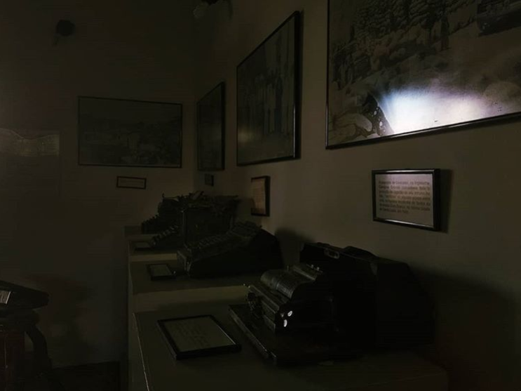

É preciso perder para poder ganhar

⠀⠀⠀⠀⠀⠀⠀⠀⠀⠀ ⠀⠀ ⠀⠀⠀ ⠀⠀⠀ ⠀⠀ O percurso de uma análise é como um caminhar em buscar de um desejo que seja próprio -porém sinto lhes dizer que de próprio só o nome e mesmo esse também vem de um outro- parece contraditório demais visto que a análise também é um processo de desalienasse do Outro -mesmo sendo impossível se desalienar do Outro-. É uma mera ilusão tentar da conta e fazer conta do que vai e vai, do que vem e não vai, e do que não vai e mesmo assim vem, não é possível se separar do Outro, é ele que nos faz desejar, que ajuda a caminhar aqui e mais ali na frente nos faz tropeçar (é um balaio de gato só), essas contradições se chama vida, tentar nomear tudo isso, classificar e definir "tal coisa vem de mim, dada coisa é do outro" é um esforço inútil -e cruel- de tentar míngua o que a de mais belo em cada um de nos: ser sujeito! O construir de um sintoma, as invenções pra lidar com a demanda que vem do Outro mas também vem de si isso sim é próprio de cada um. Pode apostar, e aposte bastante, que não há um outro que faça o que você faz pra se inventar -apesar de e que bom que é- diante do Outro. O caminhar pode ser solitário por vezes mas não sozinho pois não é sem o outro. Assim podemos respirar e da um "Ufa! Que alívio poder contar com o outro".
Rute Andrade - Psicóloga Clínica/Psicanálise Lacaniana